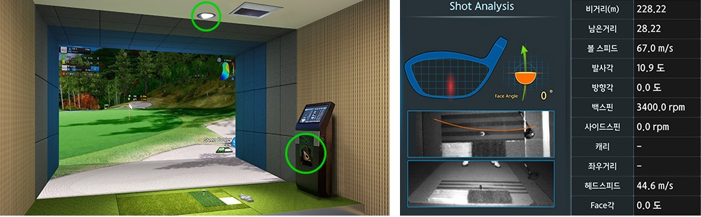
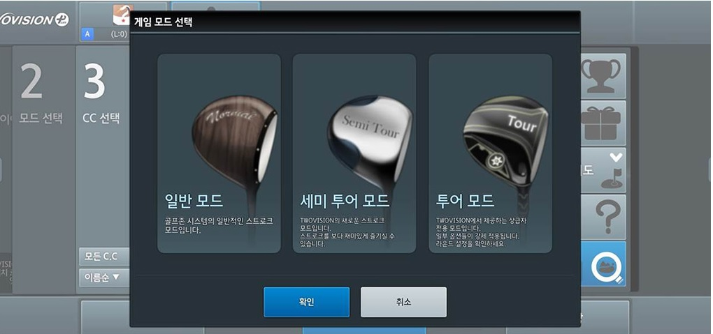
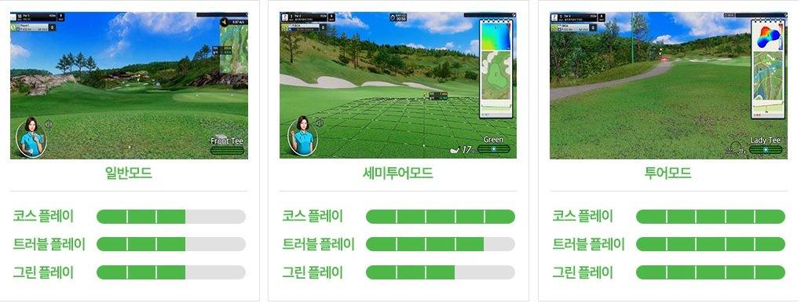
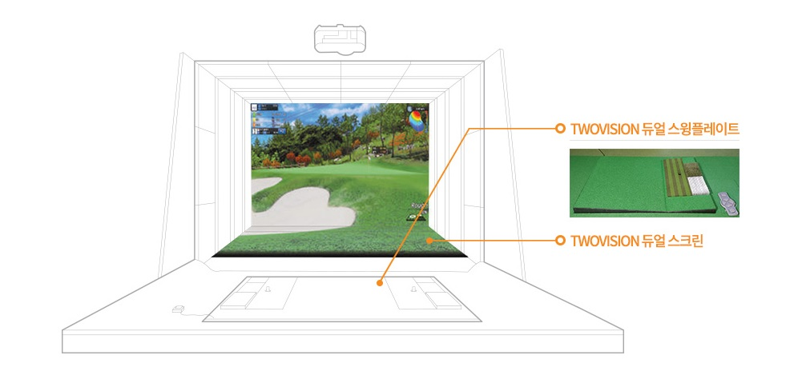
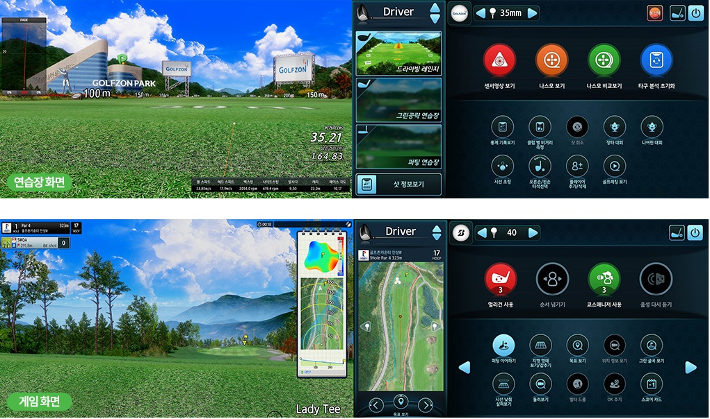

최신의 스크린골프 문화를 만나는 곳

GOLFZON PARK-TWOVISION PLUS
- 매장 소개
- 이벤트/대회
- TWOVISION PLUS
01TWOVISON 센서

새로운 방식의 센서
- 움직이는 물체를 가장 정확하게 측정할 수 있는 90도 각도에 TWOVISION 센서가 위치합니다.
- 스윙 Top, Side에 위치한 TWOVISION 센서는 기존 센서보다 더 정확하게 스윙 및 볼 궤도를 측정하고 헤드의 타격 부분과 각도를 측정하는 기술이 추가 되었습니다.
- 플레이어의 다양한 스윙 궤도와 세밀한 임팩트 구간을 센싱하기 위해 기존 센서보다 촬영속도를 개선하였습니다.
새로워진 센싱 알고리즘
- 직각에서 측정한 클럽과 볼의 궤도 값과 골프존 리얼부터 축적한 방대한 샷 데이터를 바탕으로� 골프존 만의 새로운 볼 시뮬레이션 알고리즘이 탄생하였습니다.
이로써 보다 정확한 볼 탄도를 구현하게 됩니다.
- 볼 타격 시 드라이버와 아이언 헤드는 기존센서보다 3배 많은 타격 위치를 측정 가능합니다. 이제 드라이버는 탑스핀, 아이언은 사이드 스핀까지 스크린에서 구현 가능합니다.
02 다양한 게임모드


상급자를 위한 투어모드
- 실제 필드와 유사하게 코스 매니지먼트가 가능한 투어모드가 추가되었습니다.
- 고난이도 플레이를 원하는 상급자 및 필드라운드 실전 연습이 필요한 골퍼를 위한 모드 입니다.
- 높낮이 정보 등은 화면 우측의 야디지북을 통해 확인할 수 있습니다.
- 코스 공략 및 샷 에이밍도 스크린화면과 야디지북 정보를 통해 플레이어가 직접 매니지먼트해야 합니다.
- 그린플레이는 야디지북의 그린 언듈레이션을 종합하여 플레이어 스스로 공략해야 합니다.
필드의 재미가 강화된, 세미투어모드
- 일반 모드에 비해 롱게임에 대한 코스 매니지먼트가 강화된 세미투어모드입니다.
- 벙커, 러프의 난이도를 구분하여 게임의 변수가 더욱 다양해 졌습니다.
- 그린 위의 격자라이, 남은 거리, 고저차 정보를 분석하여 그린플레이를 해야합니다.
플레이를 더욱 즐겁게, 일반모드
- 기존 VISION의 게임 난이도와 큰 차이가 없어 무난하게 TWOVISION PLUS를 즐길 수 있습니다.
03 듀얼 스크린+듀얼 플레이트

바닥 스크린을 통한 필드와 같은 몰입감
- 전면 스크린에 바닥스크린을 더하여 하나의 화면처럼 확장하였습니다.
- 실제 필드와 유사한 공간감을 제공하여 게임의 몰입감을 높힙니다.
실제와 같은 그린 플레이 제공
- 4미터 이하 퍼팅 시 바닥 스크린에 홀컵이 생성되어 실제 필드라운드와 유사한 느낌으로 라운드를 즐길 수 있습니다.
다양한 지형의 경사 구현, 듀얼 스윙 플레이트
- 타석부와 타격부의 분리구조를 통해서 실제 코스와 유사하게 다이나믹한 지형의 경사를 구현하였습니다.
04 터치 모니터

플레이어를 위한 터치모니터
- 마우스와 키보드 없이 터치만으로 편리하게 라운드를 즐길 수 있는 터치모니터 입니다.
- 주로 사용하는 기능 위주로 UI가 재구성되어 메뉴를 한눈에 파악할 수 있어 게임을 보다 빠르게 진행할 수 있습니다.
- 라운드 중 스크린에서 보여지는 샷 정보들이 터치모니터로 이동되어 스크린의 확장감은 더욱 강화되었고,
플레이어는 터치모니터를 통해 보다 명확하게 자신의 샷정보를 파악할 수 있습니다.